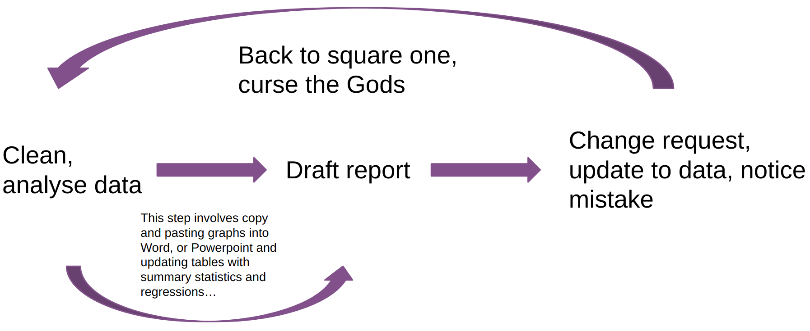

4 Writing in Quarto
Quarto is a really great tool because it lets you combine words and code together. It relies on something called markdown and pandoc to generate multiple formats. The details are covered more extensively across the internet but this link does a really good job distilling what goes on. What is incredibly infuriating about Quarto from a new user standpoint boils down to (in my experience) a few things:
A new syntax to write in
Not rendering
Things not being where you think they should be
These are all fixable problems as long as we know what could be going on. For the most part as social scientists we want our documents in one of two formats either word or pdf. In this section we will mostly deal with pdf.
4.1 Quarto
If you have read through the course syllabus you will notice that I am having you work in something called Quarto. You may be asking your self what is Quarto I have only used MS Word. Quarto embraces something called literate programming. Essentially what this means is that words and code appear side by side. This guide was created in Quarto and what I use the most. Since we are going to produce lots of graphs and tables in this class the typical workflow for that would look something like this
This involves lots of work for yourself. If you are doing a data analysis project where you produce 5 plots each time you make minor changes to those plots you are going to have to remember where those plots are, copy and paste them over, resize them or reformat them. This gets infinitely more annoying if you are reporting numbers in tables or in text. In some cases data analysis teams are constantly updating reports for stake holders based on new data. So if you have a report that says our “based on our model we would expect an increase of 8 blah blahs” and later you rerun the analysis cuz there was new data or you notice a mistake you have to figure out where exactly you said “8 blah blahs” and switch them.
In Quarto this process is a whole lot easier. The loop looks like this

You are changing the code for your figures in the document itself. So any changes are going to appear in the document automatically! You can also use code inline to automatically update numbers!
data <- 1:100
avg <- mean(data)The average for our data is 50.5. In the document it looks like this
```{r}
data <- 1:100
avg <- mean(data)
```
The average of our data is `r avg`You may have noticed that our data only goes from 1 to 100. We can make a quick modification and the document will update the document accordingly without any copy and pasting!
data <- 1:1000
avg <- mean(data)The average of our data is 500.5
4.2 How to Get a PDF
4.2.1 Installing Quarto
The process is relatively straight forward. Just go to the Quarto website and click on the download button. This will install Quarto onto your machine so that is relatively straight forward!
To produce pdfs Quarto relies on something called \(\LaTeX\). All you really need to know about \(\LaTeX\) is that you need it to produce a PDF. To install LaTeX all you need to do is open an R script and copy and paste this code and run it and then type Y and hit enter.
rstudioapi::terminalExecute(
command = "quarto install tinytex"
)It may prompt you to enter your password. This is just the password you use to log into your computer. Nothing will appear when you enter your password but your password is being entered. The reason your computer does this is for the same reason that websites do not display your password. This is installing a very minimal LaTeX distribution. After that is done you can now render PDFs.
Do get the output we want we need to do some stuff in order to tell quarto what type of document we want. You add this information at the top of the document like you would with word. However, it looks a little bit different since it relies on YAML(Yet Another Markdown Language) to add in this info.1 Your YAML heading should look like this
title: "Quarto Guide"
author: "Josh Allen"
date: "08/21/23"
format: pdfFrom there you can pass additional options to it like what the citation style, the citation engine, the kind of font you want to use etc. So it looks something like this.
title: "Quarto Guide"
author: "Josh Allen"
date: # "08/21/23" # this is to show you how to add the current date
format:
pdf:
toc: false # this turns off the table of contents
mainfont: "Cochineal" # the font I like
mainfontoptions:
- "Numbers=Proportional"
- "Numbers=OldStyle"
mathfont: "Libertinus Math"
indent: true
geometry: margin=1in # one inch margins
biblio-title: "References"
cite-method: biblatex
fontsize: 12pt
bibliography: ref.bib # specify the bib file
biblio-style: apsr # what style to choose 4.3 Using Quarto to write
If you work in the visual editor than lots of the stuff will be abstracted away. It should look somewhat familiar to a word
Lot of the same keyboard shortcuts should work! What changes is now you can insert executable code. The quickest way to do this is by doing cmd + alt/option + I on mac or ctrl + alt/option + I on a windows.
4.3.1 Working with the Source Editor
Personally I do not really like working with the visual editor which may just be because I started using Rmarkdown when the visual editor was not very good. One thing to know is that you will have to learn some new syntax to write which is fine and you will eventually get the hang of it.
4.3.2 Writing in line
Often times we use italics, bold, or a mix of both to emphasize things. In word we would either click the button or in LaTex we would do \textbf{something like this}. If you have learned LaTeX you can still do \(\textbf{this}\) but you would need to wrap it in dollar signs $\textbf{}$. Instead of doing all that what you can do is just take advantage of markdown syntax. In the table we can see how to do this
| Markdown Syntax | Output | |
|---|---|---|
|
italics and bold | |
$superscript^2$ / $subscript_2$ |
\(superscript^2\) / \(subscript_2\) | |
|
||
|
verbatim code |
|
I have yet to come up with a good mneumonic device on how to remember the difference between italics and bold. Maybe some day.
4.3.3 Code and Chunk options
What differentiates Quarto from Word is the ability to embed code alongside words. To control how these appear in your document you need to add certain options to your code chunks. The most common thing you will want to do is stop the code from appearing in documents. For your problem sets or presenting to a more technical audience you will want to do this. We can do control that via echo. If we want people to see our code than we do #| echo: true like this
```{r show-code}
#| echo: true
library(palmerpenguins)
library(ggplot2)
ggplot(penguins, aes(x = body_mass_g)) +
geom_histogram()
```which produces
library(palmerpenguins)
library(ggplot2)
ggplot(penguins, aes(x = body_mass_g)) +
geom_histogram()`stat_bin()` using `bins = 30`. Pick better value with `binwidth`.Warning: Removed 2 rows containing non-finite values (`stat_bin()`).
If we do not want to show our code than we just do #| echo: false`
```{r show-code}
#| echo: false
library(palmerpenguins)
library(ggplot2)
ggplot(penguins, aes(x = body_mass_g)) +
geom_histogram()
```which produces
`stat_bin()` using `bins = 30`. Pick better value with `binwidth`.Warning: Removed 2 rows containing non-finite values (`stat_bin()`).
Notice how ggplot is warning us about the bin width we choose. To control this we just have to change our chunk options by adding #| warning: false
```{r warning-example}
#| echo: false
#| warning: false
library(palmerpenguins)
library(ggplot2)
ggplot(penguins, aes(x = body_mass_g)) +
geom_histogram()
```which produces

Similarly if we load in the tidyverse or a package with names of similarly named functions we will get warnings and messages like this
library(tidyverse)── Attaching core tidyverse packages ──────────────────────── tidyverse 2.0.0 ──
✔ dplyr 1.1.2 ✔ readr 2.1.4
✔ forcats 1.0.0 ✔ stringr 1.5.0
✔ lubridate 1.9.2 ✔ tibble 3.2.1
✔ purrr 1.0.2 ✔ tidyr 1.3.0
── Conflicts ────────────────────────────────────────── tidyverse_conflicts() ──
✖ dplyr::filter() masks stats::filter()
✖ dplyr::lag() masks stats::lag()
ℹ Use the conflicted package (<http://conflicted.r-lib.org/>) to force all conflicts to become errorsAgain all we need to do to omit this is just change the chunk options
```{r message-example}
#| message: false
library(tidyverse)
```which produces
library(tidyverse)Notice how there is no big long warning message. One other thing to notice is that I have named the code chunks like message-example. This is good practice because it makes hoping around the document a little bit easier. Because it will say failed something to the effect of quitting on line 12-20 code-for-fig-1. Which will let you navigate there a bit easier.
Yes this is really what it is called. Some sites use TOML which is an acronym for Tom’s Obvious, Minimal Language. Much like political scientists once a joke in a title gets started it is doomed to be repeated.↩︎